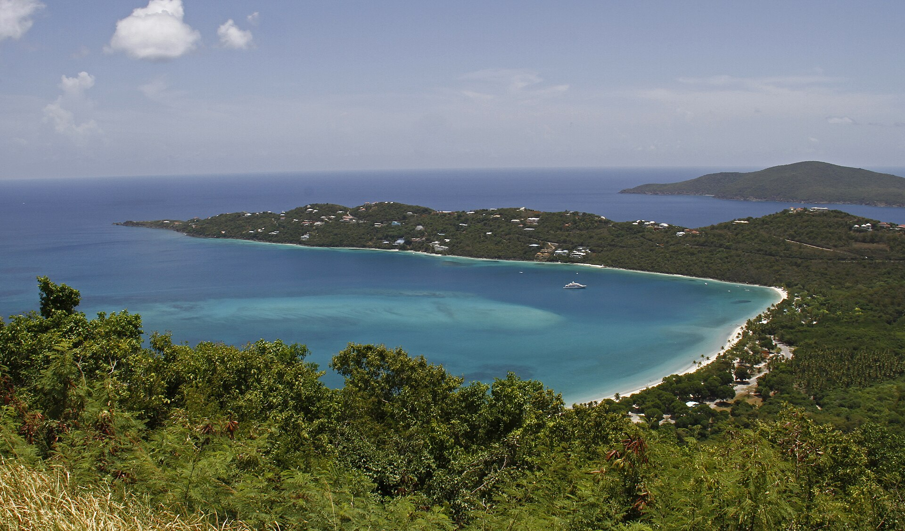
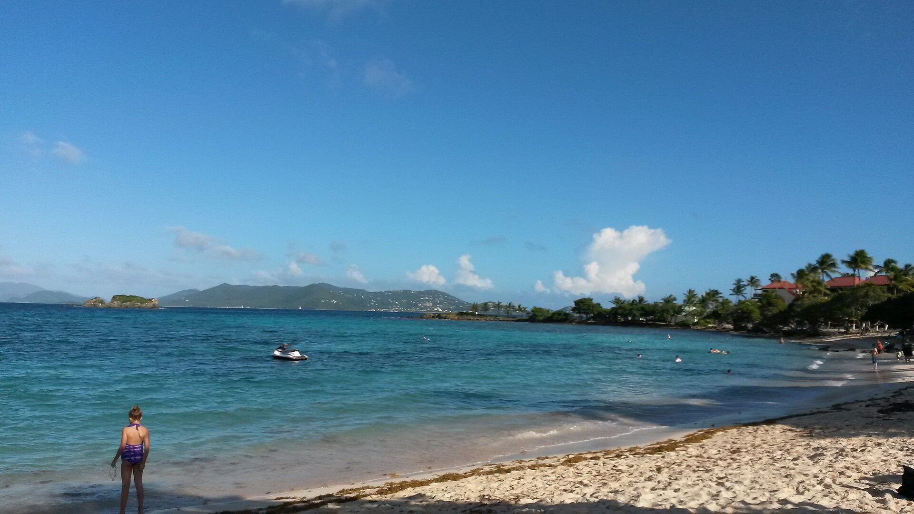
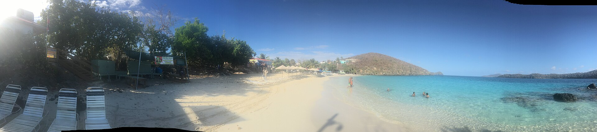
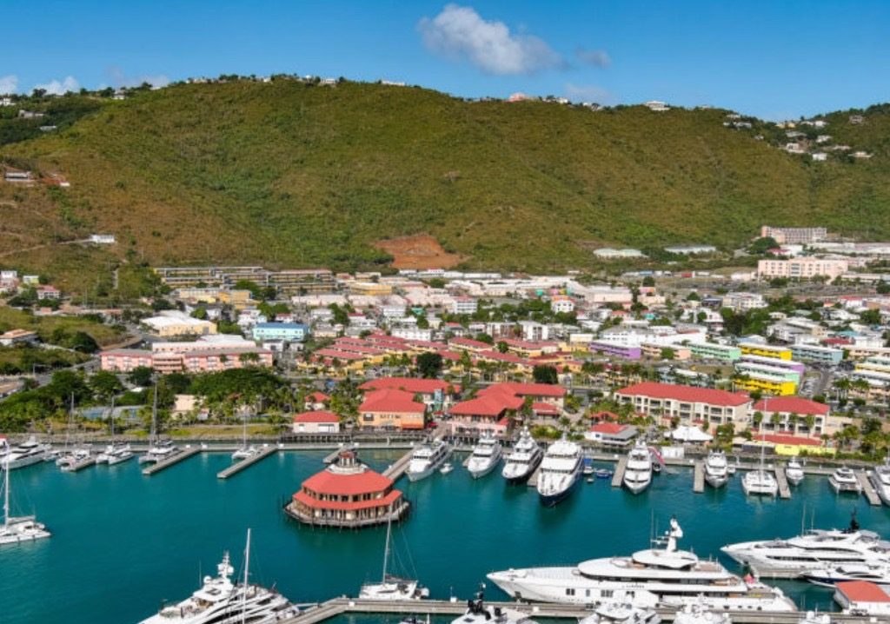
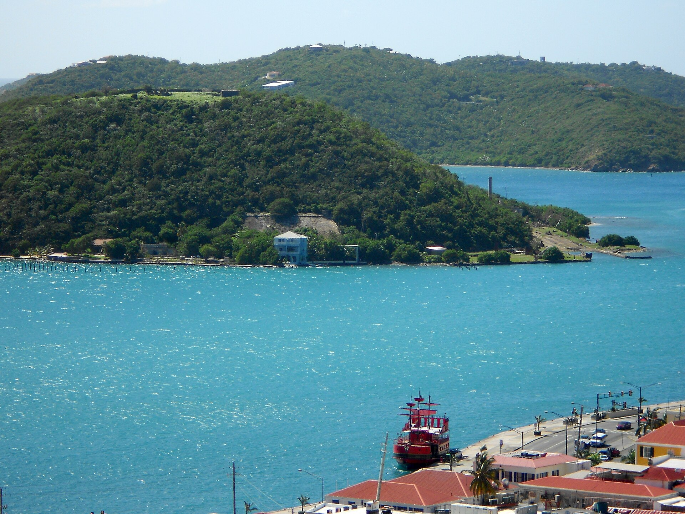
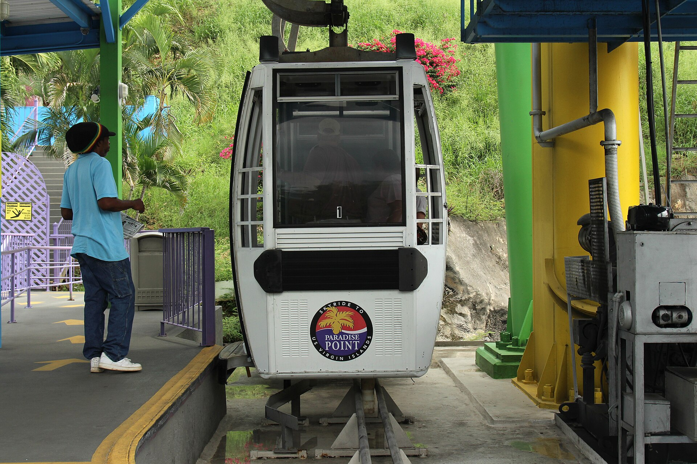

Why Cruise Passengers
Love St Thomas
St Thomas is one of the Caribbean's most popular cruise destinations, known for its white sand beaches, crystal clear water, scenic viewpoints and relaxed island atmosphere. Whether you want a relaxing beach day, a catamaran snorkelling adventure or a private island tour, St Thomas offers shore excursions for every type of cruise passenger.
With easy access from the cruise port and a wide choice of experiences, St Thomas is ideal for both first time Caribbean visitors and experienced cruisers looking for something special.
Many excursions are designed specifically for cruise schedules, helping guests enjoy the island while still returning comfortably to their ship on time.
Browse All Excursions
Orient your St Thomas cruise day
Confirm whether you are at Havensight or Crown Bay, then choose a beach-focused, mixed or private day with a conservative return buffer.
One day from the ship
Shorter calls, beach days and sightseeing-plus-beach plans
Best beaches for cruise passengers
Magens, Sapphire, Coki and Secret Harbour compared
Cruise port guide
Havensight, Crown Bay and Charlotte Amalie
Best shore excursions
Editorial comparison of cruise-friendly tour types
Beach excursions
Organised beach days versus independent visits
Private tours
Half-day vehicle, jeep-style and Sapphire focus
Popular St Thomas Excursion Types
From lazy beach days to underwater adventures, find the perfect St Thomas shore excursion for your cruise stop.

Beach Excursions
Relax on some of the Caribbean's most famous beaches including Magens Bay, Sapphire Beach and Lindquist Beach.
Explore Beach Excursions
Snorkelling Tours
Discover tropical fish, coral reefs and crystal clear Caribbean waters on catamaran and snorkelling adventures.
View Snorkelling ToursPrivate Island Tours
Enjoy a more flexible and personalized experience with private sightseeing and custom island tours.
Explore Private Tours
Cruise Port Guide
Learn where ships dock, how to get around and the best things to do during your time in St Thomas.
Read Port GuideTop Shore Excursion Experiences
in St Thomas
Magens Bay Beach Escape
One of the world's most beautiful beaches, Magens Bay offers calm turquoise waters and white sand, perfect for a relaxed cruise day ashore.
Explore Beach ExcursionsIsland Sightseeing Tours
Discover Charlotte Amalie, historic forts and panoramic viewpoints on a guided sightseeing tour that showcases the very best of St Thomas.
View Sightseeing Tours
Catamaran Snorkel & Sail
Sail the turquoise waters of Pillsbury Sound with snorkel stops, open deck sunshine and a relaxed Caribbean pace built for cruise schedules.
View Snorkelling ToursCoral World & Coki Beach
Combine an underwater observatory with reef snorkelling at Coki, a family friendly favorite just minutes from the cruise port.
Explore Snorkelling
Private VIP Island Tour
Customize your day with a private driver guide, beaches, shopping, Mountain Top views and hidden gems at your own pace.
Explore Private ToursHavensight Port & Town Walk
Step off the pier into Charlotte Amalie, colonial history, duty free shopping and waterfront views without a long transfer.
Read Port Guide Sample Cruise Day
in St Thomas
Most ships spend 7 to 10 hours in port. This sample itinerary shows how cruise passengers often combine a highlight tour with beach or snorkel time, while leaving a comfortable buffer before all aboard.
Full port & pier guideMeet at Havensight or Crown Bay
Confirm your pier on the ship's daily program. Many tours offer pier pickup within minutes of disembarkation.
Island highlights or Magens Bay
Choose a half day sightseeing loop or head straight to the island's most famous beach for swimming and photos.
Snorkel sail or Coki Beach
Catamaran trips and reef snorkelling are popular second activities, operators plan returns around your ship's departure.
Return to pier with buffer time
Allow 60 to 90 minutes before your ship's departure. Traffic near Havensight can add delay on busy port days.
St Thomas Shore Excursion Questions
How much time do I need in St Thomas port?
Most cruise ships are in port 7 to 10 hours. Half day tours (3 to 4 hours) and full experiences (5 to 6 hours) both work well if you confirm return times with your operator.
Havensight vs Crown Bay, which pier am I at?
Havensight is east of Charlotte Amalie; Crown Bay is west. Check your ship's daily program or ask the purser's desk the night before. Our port guide covers transfers and timing.
Are independent shore excursions safe for cruise passengers?
Independent operators vary in inclusions and return policies. Prefer clear meeting points and written return timing, then verify prices and cancellation terms before you pay. Confirm all-aboard with your cruise line.
What currency is used in St Thomas?
The US Virgin Islands use US dollars. Credit cards are widely accepted; small beach vendors may prefer cash for chairs, snacks or tips.
Ready for Your St Thomas Port Day?
Browse beaches, snorkelling, private tours and port tips, all planned around your cruise schedule.